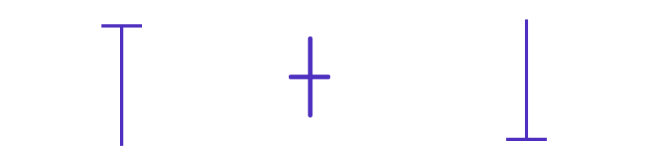

一、什么是蜡烛图？
自从蜡烛问世以来，蜡烛就一直作为人类的光源。在金融市场上蜡烛图也是一样的，它们照亮了资产价格的路径，可以帮助交易者们发现很好的交易时机。
蜡烛图随时提供全面的价格信息。虽然
折线图代表了收盘价的平滑线，烛台显示打开，关闭，任何时间段的最高价和最低价。
开盘价和收盘价将由烛台主体表示，而极端（高和低）价格将由灯芯表示。通常，如果收盘价高于开盘价，蜡烛将变成绿色。如果收盘价低于开盘价，则为红色。
由于蜡烛图提供的信息量很大，因此蜡烛图成为
外汇技术分析的基础。烛台的大小和形状讲述了一个重要的价格走势故事。这就是为什么交易者在交易时会寻找烛台形态的原因。
烛台模式可以是单个或一系列的多个烛台，可以全面了解市场情绪。取决于它们在图表上形成的位置，蜡烛图案可以帮助交易者了解基础金融资产的价格行为，以找出潜在的获利交易机会。
二、蜡烛图功能
1.体长
烛台主体的长度表示特定时间段内收盘价与开盘价之间的距离。多头机构意味着强烈的方向性运动，而多头机构则表明市场上投资者的犹豫不决。
2.灯芯长度
烛台灯芯显示在特定时间段内达到的高价和低价。从本质上讲，它们显示了该时期内价格的波动性。相对于身体位置分析棉芯长度。例如，烛芯较长的烛芯较低，表明空头试图将价格推低，但多头抵抗压力并推高价格。
解释烛形图时，也要考虑先前的趋势。必须考虑更广泛的上下文，因为蜡烛图案不是孤立形成的。
三、蜡烛图案的类型
蜡烛图案根据其提供的信号类型以及构成任何特定图案的烛台数量进行分类。因此，存在看涨和看跌形态，反转和延续形态，以及单一烛台形态，双重烛台形态和三重烛台形态。
在分析烛台形态时，重要的是要了解外汇交易心理和蜡烛图案的类型是什么含义。这些包括：
1.陀螺
陀螺的身体很小，但上下芯非常长。陀螺的身体意味着开盘价和收盘价之间几乎没有差异，而长芯灯芯则暗示价格在两个方向上都达到了极限。旋转陀螺显示，买卖双方在这段时间内发生了争吵，双方都没有获得任何特别的优势。
2.丸保
Marubozu烛台长而没有灯芯。这意味着绿色的Marubozu将具有相似的开盘价和低价，以及相似的收盘价和高价。绿色的
Marubozu表示在特定时间段内多头处于完全控制状态。另一方面，红色的Marubozu将具有相似的开盘价和高价，以及相似的收盘价和低价。红色的Marubozu表示在此期间，熊完全处于控制之下。
3.堂治

十字星烛台的灯芯很长，但身体几乎不存在。这意味着开盘价和收盘价实际上是相似的。十字绣烛台表示，在任何特定时间段内，买卖双方都无法获得优势。尽管如此，根据灯芯的位置，仍有不同类型的十字星烛台可以提供不同的价格走势分析。
相信你看完上面的内容对蜡烛图有一定的了解了吧？不妨先点击注册下面的模拟交易账户，然后边学习边实践。
四、看涨蜡烛图模式
价格走低时出现看涨烛台形态，它们表明价格即将转向或继续走高。
以下是一些最常见的看涨烛台形态：
1.单烛台图案
这些是看涨的烛台形态，因为只有一个烛台提供信号，所以可以称为“ 独行侠 ”。最常见的看涨烛台形态是：
1）锤子
锤烛台在交易区间的上端有一个较小的主体，而下烛芯则较长。它在下降趋势中形成，表明卖方试图将价格推低，但买方介入以将价格推至开盘价附近。卖方从字面上“敲定”了市场的底部。锤子烛台表明买家已准备好负责后续时间段。
2）倒锤
倒锤烛台在交易区间的下端有一个小巧的琴身，而上部的灯芯则很长。它在下降趋势中形成，表明买家试图将价格推高，但卖家介入以将价格推低。尽管如此，卖家仍缺乏动能来突破这段时间的低点。因此，倒立的锤子发出信号，表明买方可能会因卖方的弱势而受到鼓舞，并可能在随后的时间段内取得控制权。
2.双蜡烛图案
这些是烛台形态，需要两个连续的烛台来提供
交易信号。以下是一些最常见的看涨双重烛台形态：
1）镊子底部
镊子底部将在价格下跌后形成，由两个烛台组成，其烛身在交易区间的高端，而较长的下部烛芯的长度几乎相同。第一个烛台通常是红色，而第二个烛台通常是绿色。镊子底部烛台形态表明，卖方最初压低价格，但面临将价格推高的买方的阻力。卖方再次尝试，但最终被买方压倒，他们将价格推高至开盘价以上。
2）看涨吞没模式
看涨吞没形态是在下降趋势期间形成的2烛形形态。第一个烛台将是看跌的，第二个烛台将是“吞噬”第一个烛台的主体。这意味着第一个烛台的开盘价和收盘价将落在第二个烛台的交易范围内。看涨的吞没模式表明卖方在第一个烛台期间推动价格走低，但在第二个烛台期间，买方将价格推高至第一个烛台的高点而完全压倒了价格。
3.三重蜡烛图案
这些烛台形态需要三个连续的烛台来提供交易信号。以下是一些最常见的看涨三重烛台形态：
1）晨星
晨星是一个三烛形图案，其形成的下降趋势如下：第一根蜡烛看跌；第二根蜡烛看跌。第二根蜡烛的身体较小，而第三根蜡烛则看涨，并且收盘价超出了第一根蜡烛的中点。晨星表明在第一个烛台期间卖方处于控制之中，但在第二个烛台期间犹豫不决。最终，由于价格上涨，买家最终赢得了第三个烛台。
2）三名白兵
当市场上有三个连续的看涨烛台时，这三个白兵将形成形态。每个烛台在上一个烛台的主体内打开，并以超出其高价的价格关闭。第一个烛台被称为反转烛台，随后的两个烛台证实了市场的看涨势头。
五、看跌蜡烛图模式
看跌的烛台形态形成上升趋势或价格小幅上涨。它们表明价格即将转向或继续走低。
以下是一些最常见的看跌烛台形态：
1.单蜡烛图案
以下是一些最常见的看跌单一烛台形态：
1）流星
流星烛台在交易范围的下端具有较小的主体，在上端的烛芯较长。它在上升趋势中形成，表明买主试图推动价格上涨，但是卖主介入以压低价格至开盘价附近。流星烛台表明卖家准备在随后的时间段内掌控一切。
2）吊人
悬挂式烛台在交易区间的上端有一个小巧的身材，而下部烛芯则很长。它在上升趋势中形成，表示卖方试图压低价格，但买方介入以支持价格上涨。但是，买主只能将其推高至接近开盘价。因此，上吊的人发出信号，卖主数量超过买主，并且在随后的时间段内价格可能会受到压低。
2.双蜡烛图案
以下是一些最常见的看跌双烛台模式：
1）镊子上衣
镊子顶将形成上升趋势，由两个烛台组成，两个烛台的主体位于交易区间的下端，而上部烛芯的长度几乎相同。第一个烛台看涨，第二个烛台看跌。镊子顶部的烛台形态表明，买主最初将价格推高，但卖主设法压低了价格。买方将价格推低至开盘价以下的努力完全挫败了买方推高价格的另一种尝试。
2）看跌吞没格局
看跌的吞没形态是将在上升趋势中形成的2烛形形态。第一个烛台看涨，第二个烛台看跌，它将“吞噬”第一个烛台的主体。看跌的吞没形态表明，买主在第一个烛台期间将价格推高，但卖主在第二个烛台期间将价格推高，从而压低了价格，使其超出了第一个烛台的低点。
3.三重蜡烛图案
以下是一些最常见的看跌三重烛台形态：
1）晚星
傍晚的星星是3烛形，以上升趋势形成，如下所示：第一个蜡烛看涨；第二根蜡烛的身体较小，第三根蜡烛的熊势较弱，并且收盘价超出了第一根蜡烛的中点。夜晚的星星表示在第一个烛台期间买家处于控制之中，在第二个烛台期间犹豫不决。卖方最终在第三个烛台负责，并压低价格。
2）三只黑乌鸦
当市场上有三个连续的看跌烛台时，会形成三个黑乌鸦图案。每个烛台在上一个烛台的主体内打开，并以超出其低价的价格关闭。第一个烛台被称为反转烛台，随后的两个烛台证实了市场看跌势头。
六、使用蜡烛图案进行交易的缺点
烛台形态可提供有关原始价格走势的信息，但也有其局限性。在动荡的市场中，烛线形态可能会产生错误的信号，其特征是缺口和突然的价格飙升。
而且，由于它们有助于分析当前或最近的价格走势，因此它们无法提供全面的信息。这意味着很容易陷入不考虑长期市场广泛情绪的交易中。基本上，烛台形态不是圣杯，不应孤立使用。
为了提高烛形图的有效性，重要的是要寻求与其他分析方法的融合。最好的方法是将它们与支撑位和阻力位配对，因为烛形图提供方向信号。
烛线形态还可以与技术分析工具（例如，指示市场超买和超卖情况的震荡指标）以及趋势追踪指标（如抛物线指标）相结合，这将有助于识别趋势市场中的交易机会。同样，烛台模式应与严格的风险管理计划进行交易，这将有助于限制风险并提高利润。风险管理涉及设定最佳止损和获利订单。
七、最终决定——与AvaTrade爱华交易
使用蜡烛图案进行交易是一项宝贵的技能，可以帮助任何交易者大大提高其交易准确性。它们可以提供宝贵的市场情绪信息，并用作其他类型的价格分析生成的信号的确认工具。重要的是要研究大量可用的烛台形态及其背后的市场心理，以利用市场中的更多交易机会。
注册一个免费的AvaTrade爱华MT4模拟账户，学习如何在金融市场中使用蜡烛图进行交易，用模拟账户进行外汇交易无需承担任何资金风险。
**免责声明– 尽管已对上述内容进行了适当的研究，但其仍只是提供信息和教育的内容。提供的内容均不构成任何形式的投资建议。